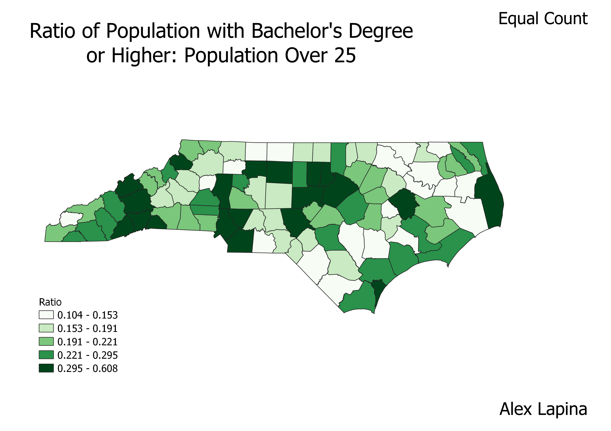
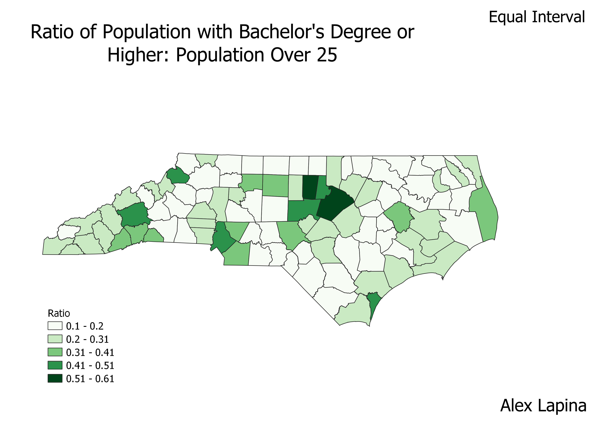
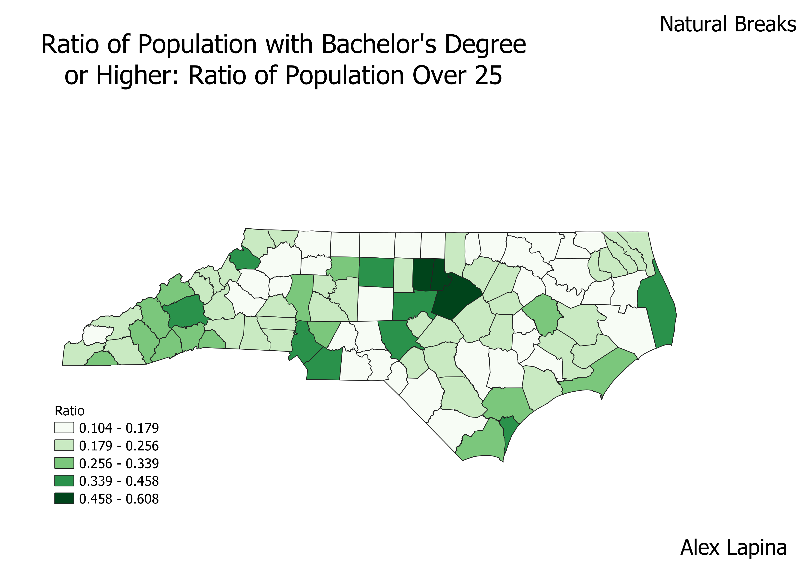

Homework 6.2: Census data ratios and categories
Alex Lapina
These maps show information about educational attainment by county in North Carolina. The ratio is based on the population with a bachelor's degree or higher to the population over 25 years old. Creating a ratio represents this data better because if it only showed the population with a bachelor's degree or higher then the most populated counties would be likely have the most with a degree by default. By using a ratio, the counties are equally represented by the percentage of 25+ year olds that have a bachelor's degree or higher, as opposed to a simple count.

With an equal count classification, it is easy to group the data into the different intervals. The data is visually easy to interpret. Since the values for the highest category is spread out over a large range though, it is hard to appreciate which values are on the upper extreme.

Equal intervals is a very straightforward way to represent the data because it is like a histogram showing the frequency for each interval. For this particular data set, the lowest two ranges contain the majority of the data which causes the map to look mostly blank and visually unappealing.

Of the three maps, this one communicates the information the best because the intervals are somewhat equal and the counts are similar. Also, the graph is visually pleasing because of the somewhat equal distribution for every interval.
Data used for this project
CSV dataset
Link to shapefile